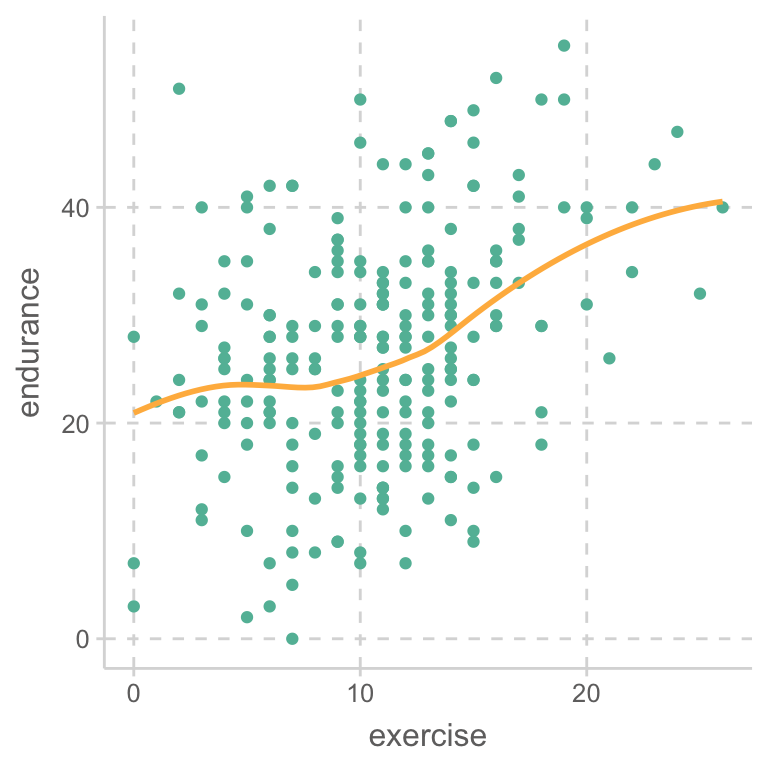

Interaction Effects
Applied Multiple Regression/Correlation Analysis for the Behavioral Sciences by Jacob Cohen, Patricia Cohen, Stephen G. West, Leona S. Aiken
- 두 예측변수를 동시에 보고, regression plane의 입장에서 보았을 때
- 한 예측변수가 변할 때, 다른 예측변수와 Y의 관계를 보았을 때
Continuous vs. Continuous
예제: 나이가 듦(age)에 따른 지구력(endurance)의 감소가 운동을 한 기간(exercise)에 따라 변화하는가?
- 연구자의 관심변수에 따라 다르게 표현될 수 있음.
- 나이가 지구력에 미치는 부정적 영향을 운동이 완화시키는지 관심.
- 이 때, 운동이 moderator로 작용하는 moderating effect (조절효과)를 가지는지 검증.
- 통계적으로는 나이과 운동기간이 서로 상호작용(interact)하여 지구력에 영향을 미치는 것으로 나타남.
Data: c07e01dt
endurance: the number of minutes of sustained jogging on a treadmill
exercise: the number of years of vigorous physical exercise
acad2 <- read_csv('cohen/data/c07e01dt.csv')
acad2# A tibble: 245 × 3
age exercise endurance
<dbl> <dbl> <dbl>
1 60 10 18
2 40 9 36
3 29 2 51
4 47 10 18
5 48 9 23
6 42 6 30
7 55 8 8
8 43 19 40
9 39 9 28
10 51 14 15
# ℹ 235 more rowslibrary(psych)
lowerCor(acad2) age exrcs endrn
age 1.00
exercise 0.28 1.00
endurance -0.13 0.34 1.00acad2 %>%
ggplot(aes(x = age, y = endurance)) +
geom_point() +
geom_smooth(se = FALSE, span = 1)
acad2 %>%
ggplot(aes(x = exercise, y = endurance)) +
geom_point() +
geom_smooth(se = FALSE, span = 1)
나이와 지구력의 관계가 운동기간에 따라 다른가를 보기 위해, 운동기간을 3구간으로 나눔.
# 편의상 운동기간을 3구간으로 나눔
acad2 %>%
mutate(exercise_cat = cut_number(exercise, 3)) %>%
ggplot(aes(x = age, y = endurance, color = exercise_cat)) +
geom_point() +
geom_smooth(se = FALSE, span = 1) +
facet_wrap(~exercise_cat)
# 편의상 나이를 3구간으로 나눔
acad2 %>%
mutate(age_cat = cut_number(age, 3)) %>%
ggplot(aes(x = exercise, y = endurance, color = age_cat)) +
geom_point() +
geom_smooth(se = FALSE, span = 1) +
facet_wrap(~age_cat)
두 변수, 나이와 운동기간으로 지구력을 예측하는 모형을 세우면,
mod_s1 <- lm(endurance ~ age, data = acad2)
mod_s2 <- lm(endurance ~ exercise, data = acad2)
mod <- lm(endurance ~ age + exercise, data = acad2)
export_summs(mod_s1, mod_s2, mod)| Model 1 | Model 2 | Model 3 | |
|---|---|---|---|
| (Intercept) | 33.16 *** | 18.39 *** | 29.40 *** |
| (3.42) | (1.60) | (3.21) | |
| age | -0.13 * | -0.26 *** | |
| (0.07) | (0.07) | ||
| exercise | 0.76 *** | 0.92 *** | |
| (0.14) | (0.14) | ||
| N | 245 | 245 | 245 |
| R2 | 0.02 | 0.11 | 0.17 |
| *** p < 0.001; ** p < 0.01; * p < 0.05. | |||
Interaction term을 추가해서 모형을 세우면
\(\displaystyle \widehat{endurance} = b_1\cdot age + b_2\cdot exercise + b_3\cdot age \cdot exercise + b_0\)
\(\displaystyle = (b_1 + b_3 \cdot exercise)\cdot age + b_2\cdot exercise + b_0\)
이제 age의 기울기가 exercise의 값에 따라 변할 수 있음.


mod_interact <- lm(endurance ~ age * exercise, data = acad2)
# 동일: endurance ~ age + exercise + age:exercise
S(mod_interact) # library(car)Call: lm(formula = endurance ~ age * exercise, data = acad2)
Coefficients:
Estimate Std. Error t value Pr(>|t|)
(Intercept) 53.17896 7.52661 7.065 1.71e-11 ***
age -0.76596 0.15980 -4.793 2.87e-06 ***
exercise -1.35095 0.66626 -2.028 0.043694 *
age:exercise 0.04724 0.01359 3.476 0.000604 ***
---
Signif. codes: 0 '***' 0.001 '**' 0.01 '*' 0.05 '.' 0.1 ' ' 1
Residual standard deviation: 9.7 on 241 degrees of freedom
Multiple R-squared: 0.2061
F-statistic: 20.86 on 3 and 241 DF, p-value: 4.764e-12
AIC BIC
1814.57 1832.07 \(\displaystyle \widehat{endurance} = -0.766\cdot age -1.350\cdot exercise + 0.047\cdot age \cdot exercise + 53.18\)
\(\displaystyle = (-0.766 + 0.047 \cdot exercise)\cdot age -1.350\cdot exercise + 53.18\)
age의 기울기는exercise의 값에 따라 변함- 운동기간이 0년인 경우, 지구력에 미치는 나이의 효과: \((-0.766+0.047*0)\cdot age = -0.766\cdot age\)
- 운동기간이 10년인 경우, 지구력에 미치는 나이의 효과: \((-0.766+0.047*10)\cdot age = -0.30\cdot age\)
각 회귀계수의 의미는 다른 변수의 값이 0일 때의 기울기/효과임
age: -0.766은 운동기간이 0년일 때의 나이의 효과exercise: -1.350은 나이가 0살일 때의 운동기간의 효과age:exercise: 0.047는 두 변수의 joint effect- 절편 53.18: 운동기간이 0년인 0세의 지구력
회귀계수를 용이하게 해석하기 위해 변수를 centering하거나 standardizing하는 것이 좋음.
- 0의 의미가 있는 특별한 경우가 아니면 centering을 기본적으로 함.
- 예를 들어, 언어발달 ~ 나이 * 형제자매 수 + 부모의 교육수준
- 형제자매의 수 0은 의미가 있음.
- 위의 경우
age와exercise의 단위가 의미가 있으므로, 표준화보다는 centering - p-value들은 모두 바뀐 의미의 회귀계수에 대한 영가설 검정
# jtools의 center()함수를 이용하거나 데이터셋에서 미리 변환
mod_interact_c <- lm(endurance ~ center(age) * center(exercise), data = acad2)
S(mod_interact_c)Call: lm(formula = endurance ~ center(age) * center(exercise), data = acad2)
Coefficients:
Estimate Std. Error t value Pr(>|t|)
(Intercept) 25.88872 0.64662 40.037 < 2e-16 ***
center(age) -0.26169 0.06406 -4.085 6.01e-05 ***
center(exercise) 0.97272 0.13653 7.124 1.20e-11 ***
center(age):center(exercise) 0.04724 0.01359 3.476 0.000604 ***
---
Signif. codes: 0 '***' 0.001 '**' 0.01 '*' 0.05 '.' 0.1 ' ' 1
Residual standard deviation: 9.7 on 241 degrees of freedom
Multiple R-squared: 0.2061
F-statistic: 20.86 on 3 and 241 DF, p-value: 4.764e-12
AIC BIC
1814.57 1832.07 - 나이에 대한 회귀계수 -0.26: 운동기간이 평균(10.67년)일 때의 나이의 효과
- 운동기간에 대한 회귀계수 0.97: 나이가 평균(49.18세)일 때의 운동기간의 효과
psych::describe(acad2) vars n mean sd median trimmed mad min max range skew kurtosis
age 1 245 49.18 10.11 48 49.11 10.38 20 82 62 0.15 -0.08
exercise 2 245 10.67 4.78 11 10.56 4.45 0 26 26 0.27 0.23
endurance 3 245 26.53 10.82 27 26.39 10.38 0 55 55 0.11 -0.30
se
age 0.65
exercise 0.31
endurance 0.69library(effects)
plot(predictorEffects(mod_interact, ~age, xlevels = 3))
m <- mean(acad2$exercise) |> round(2); sd <- sd(acad2$exercise) |> round(2)
plot(predictorEffects(mod_interact, ~age, xlevels = list(exercise = c(m-sd, m, m+sd))))
평균보다 1 표준편차 만큼 오랜 운동한 경우: m + 1sd = 10.67 + 4.78 = 15.45년
- 나이에 따른 지구력 감소가 거의 없는가?
mod_interact_t <- lm(endurance ~ age * I(exercise - 15.45), data = acad2)
S(mod_interact_t)Call: lm(formula = endurance ~ age * I(exercise - 15.45), data = acad2)
Coefficients:
Estimate Std. Error t value Pr(>|t|)
(Intercept) 32.30671 4.72744 6.834 6.71e-11 ***
age -0.03602 0.09027 -0.399 0.690184
I(exercise - 15.45) -1.35095 0.66626 -2.028 0.043694 *
age:I(exercise - 15.45) 0.04724 0.01359 3.476 0.000604 ***
---
Signif. codes: 0 '***' 0.001 '**' 0.01 '*' 0.05 '.' 0.1 ' ' 1
Residual standard deviation: 9.7 on 241 degrees of freedom
Multiple R-squared: 0.2061
F-statistic: 20.86 on 3 and 241 DF, p-value: 4.764e-12
AIC BIC
1814.57 1832.07 confint(mod_interact_t) |> print(digits = 2) 2.5 % 97.5 %
(Intercept) 22.99 41.619
age -0.21 0.142
I(exercise - 15.45) -2.66 -0.039
age:I(exercise - 15.45) 0.02 0.074Interaction의 패턴
synergistic or enhancing When both the first-order and interactive effects are of the same sign, the interaction is synergistic or enhancing. If all three signs are negative, we have the same synergistic effect. Suppose life satisfaction (Y) is negatively related to job stress (X) and to level of marital problems (Z).Their interaction is negative, so that having both high job stress and high marital problems leads to even less life satisfaction than the sum of X and Z would predict.
buffering interaction, already defined in Section 7.4.5. Here the two predictors have regression coefficients of opposite sign. In addition, one predictor weakens the effect of the other predictor; that is, as the impact of one predictor increases in value, the impact of the other predictor is diminished. Buffering interactions are discussed in both mental and physical health research in which one predictor may represent a risk factor for mental or physical illness while the other predictor represents a protectivefactor that mitigates the threat of the risk factor (e.g., Cleary & Kessler, 1982; Cohen & Wills, 1985; Krause, 1995). In the second numerical example in this chapter, increasing age (X) is the risk factor for diminished endurance (F) and vigorous exercise is the protective factor (Z); the negative impact of age on endurance is lessened by a history of vigorous exercise.
interference orantagonistic interactionin which both predictors work on the criterion in the same direction, and the interaction is of opposite sign (Neter, Kutner, Nachtsheim, & Wasserman, 1996). Recall the example mentioned at the outset of Section 7.1, that perhaps ability and motivation have compensatory effects on graduate school achievement. Surely both ability and motivation are each positively related to achieve- ment (Bl > 0 and B2 > 0). Yet the importance of exceptional ability may be lessened by exceptional motivation, and vice versa, a partially “either-or” pattern of influence of the two predictors on the criterion. If so, their interaction is negative (B3 < 0), that is, of the opposite sign of the two first-order effects.
Hassles, support, symptons p.551 Howell
Continuous vs. Categorical
- 부서별 연봉
- 성별
- Demetia 그룹에 따른
Categorical vs. Categorical: factorrical design
- 성별과 결혼 여부에 따른 임금차이